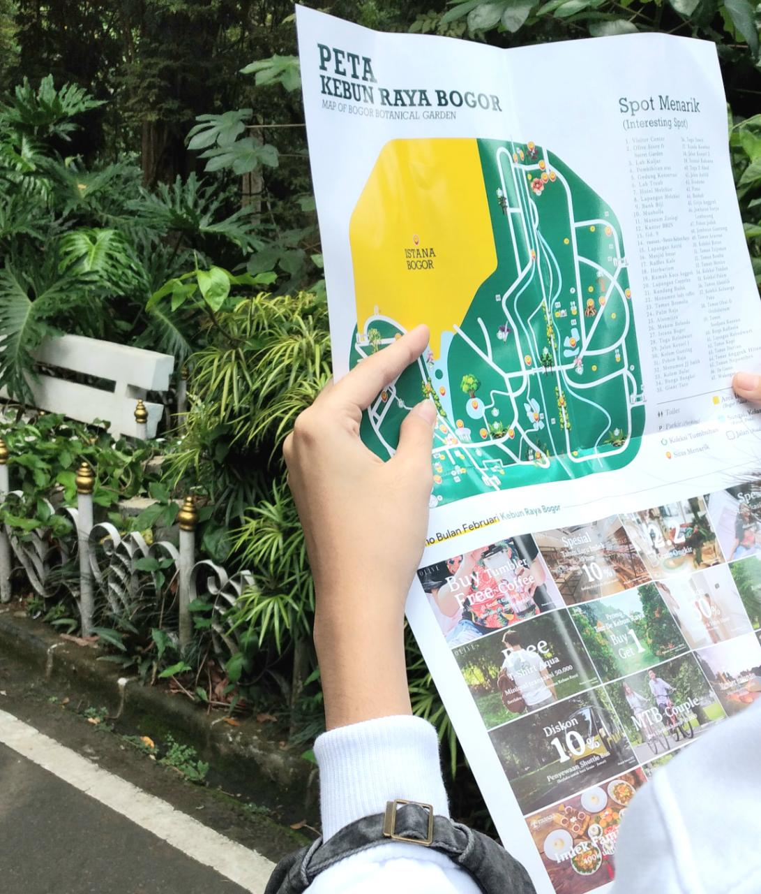
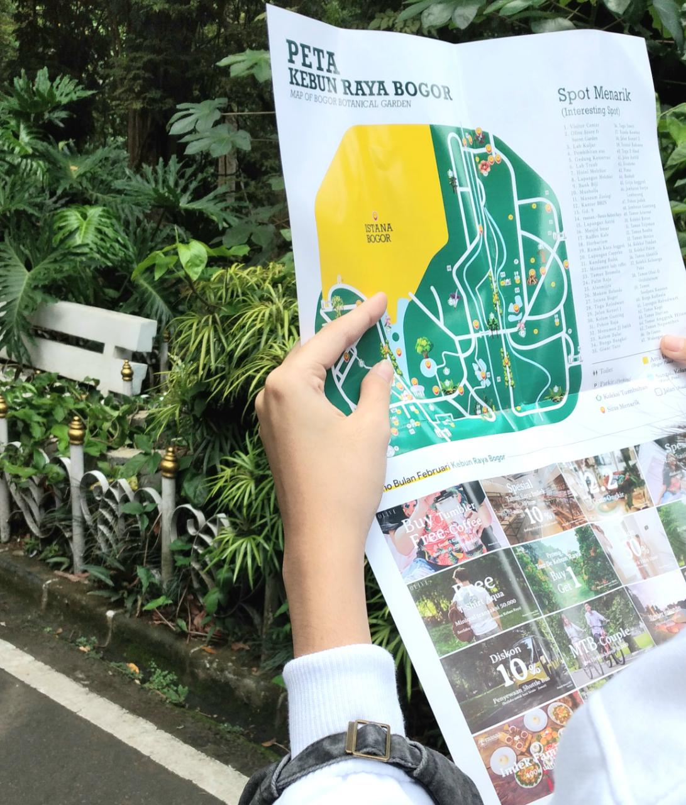
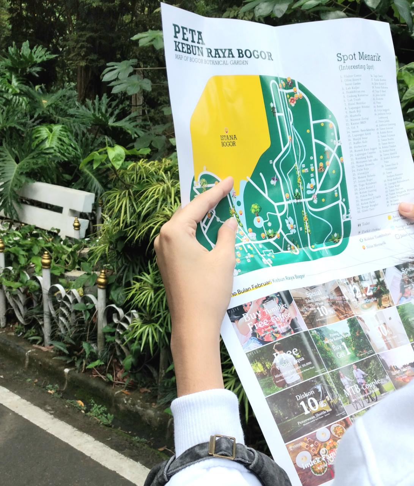
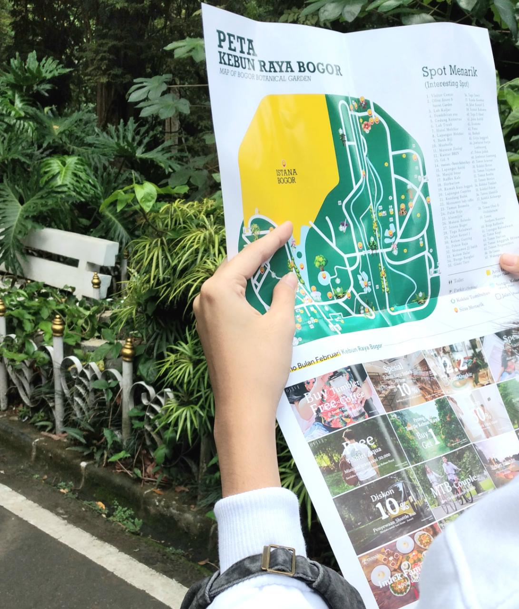

Yup! She lives in Bogor for more than 18 years old. And She loves tasty and sweet foods. Once, She ate too much martabak until She threw up at mid night hihi. She also read books (a lot sometimes). That's why She often go to the Bogor Public Library since someone introduced her that.